The Unix Shell, Git and Github: an Introduction¶
Requirements¶
Command Line Interfaces (CLI) are found throughout all Operating Systems, however we recommend the use of the Unix CLI. If you have a Unix based machine such as Linux/Ubuntu (or other Linux distributions), macOS, you are ready for the next step. If you use a Windows machine, please install the Windows Subsistem for Linux (WSL) as seen in the Before FOSS Starts section.
The Unix Shell¶
The computer is a tool. It evolved over the years from being an intricated calculator into an interactive machine with thousands of moving parts that keep us all connected through the Internet. It is now the norm to use a mouse, keyboard, and seeing flashing images on our screens through the Graphical User Interface (GUI). GUIs are central to the way we interact with computers, however, to best take advantage of the computer's many systems, one needs to learn of the Command Line Interface (CLI). The CLI sees the computer stripped down to only a Terminal from where one can run powerful commands executed through the Shell.
Whilst the GUI allows for better accessbility to a computer, the CLI allows for advanced usage of one's computer.
CLI vs Terminal vs Shell¶
- CLI (Command Line Interface): an interface that receives commands (and gives output) from a user in the form of lines of text.
- Terminal: the text based interface window.
- Shell: a computer program and scripting language that presents a CLI which allows you to control your computer using commands.
The Shell sends commands to the computer through the CLI accessible through a Terminal window
Things-to-Know About Commands¶
- Shell commands are used to navigate, visualize, modify (files/folders) and automate (processes), and can only be executed through the shell's terminal window.
- For every command, typing
man(manual) before the command, will open the manual for said command.$ man ls- Doing the above command will result in opening the manual for the
lscommand. You can exist the man page by pressingq.
- Doing the above command will result in opening the manual for the
- Each command has flags, or options, which are summoned with a
-, such as<command> -<flag>.$ ls -a -l -h- Doing the above command calls for the
-a(all),-l(long),-h(human readable) flags. This causeslsto output a list of all files (inculding hidden files/folders) with human readable file size (e.g., it will list 3MB instead of 3000000), permissions, creator, and date of creation. - If you do not know what flags are available, you can refer to the
mancommand (or for many tools, use the-h(help) flag).
- Doing the above command calls for the
.refers to current directory;..refers to above directory;/is the directory separator;~indicates the home directory.$ ls . # lists files and folders in the current directory $ ls .. # lists files and folders in the above directory $ ls ~ # lists files and folders in the home directory $ ls ~/Documents # lists files and folders in Documents (a folder present in the home directory)
Introductory Shell Commands¶
The following are introductory commands necessary when interacting with a computer through the Shell. These will help you orient, create and delete files. Most of this material is explained in more details in the Carpentries' Shell Module. Visit the Carpentries' website for a more in-depth tutorial.
A short tutorial introducing the Shell
Here below are quick explanations of a few elementary commands that will help you orient and navigate your files and folders through the Shell. If you would like to follow along the explanations for each command, feel free to download and unzip the shell-lesson-data.zip file from the Shell's Carpentry module.
Don't have access to a GUI?
Following along on a machine with no access to a GUI? Execute the following commands:
$ sudo apt install unzip
$ wget https://swcarpentry.github.io/shell-novice/data/shell-lesson-data.zip
$ unzip shell-lesson-data.zip
Navigation¶
| Command | Explanation |
|---|---|
pwd |
print working directory |
ls |
list content of folder |
cd |
change directory |
By typing pwd, the current working directory is printed.
$ pwd
/mnt/d/
We can then use ls to see the contents of the current directory. By using the -F flag (ls -F) we can also see the type of file. Note: an asterisk (*) at the end of the object will denote a file, whilst a slash (/) will denote a folder.
$ ls -F
shell-lesson-data/ shell-lesson-data.zip*
We can then move inside the folder of our choice doing cd. Doing ls following the opening of the folder of choice, will show the contents of the folder you just moved in. Feel free to explore the contents of the folders by using cd and ls.
$ cd shell-lesson-data
$ ls -F
exercise-data/ north-pacific-gyre/
$ ls -F exercise-data/
animal-counts/ creatures/ numbers.txt* proteins/ writing/
Use the Tab key to autocomplete
You do not need to type the entire name of a folder or file. By using the tab key, the Shell will autocomplete the name of the files or folders. For example, typing the following
$ ls -F exer
and pressing the tab key, will result in autocompletion.
$ ls -F exercise-data/
You can then press tab twice, to print a list of the contents of the folder.
$ ls -F exercise-data/
animal-counts/ creatures/ numbers.txt proteins/ writing/
Working with Files and Directories¶
| Command | Explanation |
|---|---|
mkdir |
make a directory |
touch |
creat empty file |
nano or vim |
text editors |
mv |
move command |
cp |
copy command |
rm |
remove command |
Return to shell-lesson-data, and crate a directory with mkdir <name of folder>.
$ mkdir my_folder
$ ls -F
exercise-data/ my_folder/ north-pacific-gyre/
Notice the new my_folder directory.
Naming your files
It is strongly suggested that you avoid using spaces when naming your files. When using the Shell to communicate with your machine, a space can cause errors when loading or transferring files. Instead, use dashes (-), underscores (_), periods (.) and CamelCase when naming your files.
Acceptable naming:
$ mkdir my_personal_folder
$ mkdir my_personal-folder
$ mkdir MyPersonal.Folder
Question
What do you think will happen if you attempt creating a folder by typing spaces?
Solution
You will obtain as many folders as typed words!
$ mkdir my folder
$ ls -F
exercise-data/ folder/ my/ north-pacific-gyre/
my and folder.
Create an empty file with touch <name of file>.
$ touch new_file
touch will create an empty file, it is up to you to populate using whichever text editor you prefer. Refer to the carpentries material to know more about nano and its functionalities (link).
Tip
You can also use your text editor to look at the contents of your files!
Use mv <name of file or folder you want to move> <name of destination folder> to move your newly created file to the directory you created previously (you can then use ls to check if you successully moved the file).
$ ls -F
exercise-data/ new_file* my_folder/ north-pacific-gyre/
$ mv new_file my_folder/
$ ls -F
exercise-data/ my_folder/ north-pacific-gyre/
$ ls -F my_folder/
new_file*
mv can also be used to rename a file or folder with mv <name of file or folder you want to change> <new name>.
$ cd my_folder/
$ mv new_file my_file
$ ls -F
my_file*
cp is the command to copy a file with the syntax cp <name of file you want to copy> <name of copy file>
$ cp my_file copy_my_file
$ ls -F
copy_my_file* my_file*
Copying folders
To copy folders and the content of these folders, you will have to use the -r flag (recursive) for cp in the following manner cp -r <name of folder you want to copy> <name of copy folder> (following example is from the shell-lesson-data/ directory).
$ cp -r my_folder/ copy_my_folder
$ ls -F
copy_my_folder/ exercise-data/ my_folder/ north-pacific-gyre/
$ ls -F my_folder/
copy_my_file* my_file*
$ ls -F copy_my_folder/
copy_my_file* my_file*
To remove an unwanted file, use rm <name of file to remove>.
$ rm copy_my_file
$ ls -F
my_file
Removing folders
Save as the "Copying Folders" note, you have to use the -r flag to remove a folder rm -r <name of folder you want to remove> (following example is from the shell-lesson-data/ directory).
$ rm -r copy_my_folder/
$ ls -F
exercise-data/ my_folder/ north-pacific-gyre/
Introductory Remarks¶
The commands listed here above are to help you better understand directories and files. There is a lot more that one can accomplish when communicating with you computer through the Shell. In case you want to know more, here are some useful links you can visit:
Git and Github¶
The concept of version control will be touched on in more depth later on in FOSS, however it is important to know the basics of Git and GitHub.
-
Git:
- First developed in 2005, git is a version control software that allows users to make changes and add versions to their code.
- Changes and versions are saved locally.
- Accessible through the Shell.
-
GitHub:
- First launched in 2008, its main focus is hosting and sharing code.
- Changes and versions are saved online (requires an account).
- Mainly administered through the web (it also has a desktop app).
- Code can be cloned to your computer, changes can be pulled, committed and pushed.
The O in FOSS
FOSS stands for Foundational Open Science Skills: how many times have you worked on your code just to hit a bottleneck and found a solution on Stack Overflow? How many times have you found links that bring you to a GitHub repository with the exact snippet of code you needed?
The beauty of the O is that it makes Science and its code available for all through the internet, sharing ideas and solutions for all.
Licences
Beware of what code you use and replicate, as a complete GitHub repository comes with a licence. Different licences allow the code to be accessed and shared in different methods, therefore always exercise care when looking at other people's code.
Introducing GitHub¶
Since we are talking about making science accessible, we invite you to use GitHub to save and share your code. Please start by creating a GitHub account at https://github.com/.
Repositories¶
Repositories are where you code is stored. A suggestion is to have one repository for one project.
You can create repositories by clicking on the Repositories tab, and then clicking New.

Here, you can choose the name of your own repository, choose to make it private or public, adding a README and a licence. It is strongly reccomended that you choose to add an empty README file.
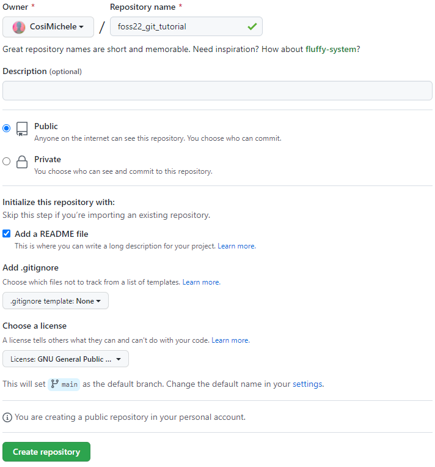
So, why a README?
There are two main reasons why you would like a README file:
- It adds structure to your repository automatically - otherwise you would need to create said structure by yourself (not recommended for beginners).
- It is the "default" file that GitHub reads upon opening the repository. It can be treated as the go-to file that explains what the repository is for, what each file does, how to cite your reasearch, amongst other things.
Adding a Licence
As discussed previously, the addition of a licence can heavily contribute to the shareability of your code. Make sure that whichever licence you choose is in line with your principals as well as your project's. GitHub comes with a list of licences which you can review. It is also common to choose a licence later on!
Ultimately, your new repository should look like the following screenshot. Notice the LICENCE document and the README.md
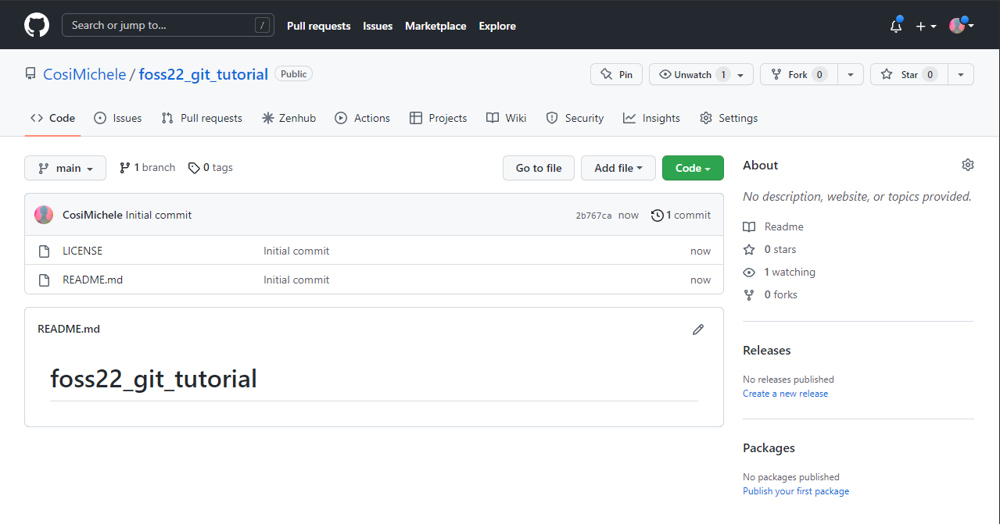
The Markdown Extension (.md)
Markdown is a lightweight markup language for creating formatted text using a plain-text editor well widespread throughout text files on the web. It uses symbols (*~-#`) for syntaxing text, and it is what GitHub (and this website!) use to format text. You can read more on Markdown on the Markdown Guide.
Adding and Modifying Code¶
GitHub allows you to add and modify code in two ways: through the online portal (the webpage you're seeing) and on your computer.
Adding Code through the GitHub web page¶
Adding code to your repository through the web page is suggested if what you want to add is simple (Like a README file!).
- Click the Add File button, which will allow you to either create a new file, or upload files from your computer. Select Create New File.
- The editing page will open: choose a name and an extension on the top of the page.
- On the editing page you can modify code as you see necessary (writing, pasting)
- 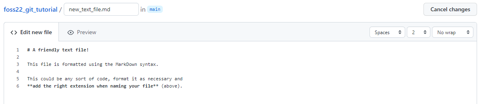
- you can also see your changes (if formatted) with the preview function (with the Preview button).
- To "Save" your changes, you will need to commit your changes:
- navigate at the bottom of the page, specify your commit with a name and add a description if necessary.
- 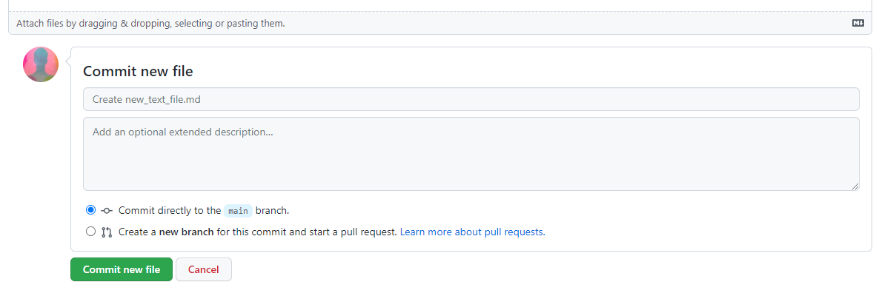
- You will be able to see your newly created file on your repository home after committing your changes.
Committing changes
Committing is the term used for saving changes you've made to your code. Each commit can be accessed within the GitHub web interface, which will show you the code prior and after the changes you've made. To see a list of all commits you made, click on the icon under the Code button.
-
You can see from the picture below the lines that have been removed (in red), and the lines that have been added (in green). 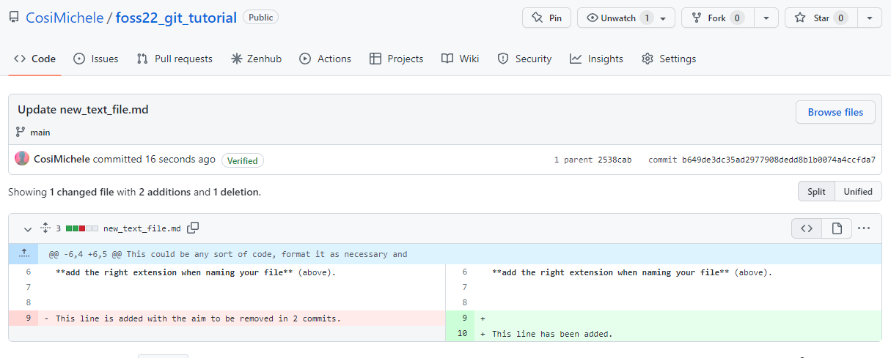
-
Additionally, you can also see the full list of commits made to the file or repository. 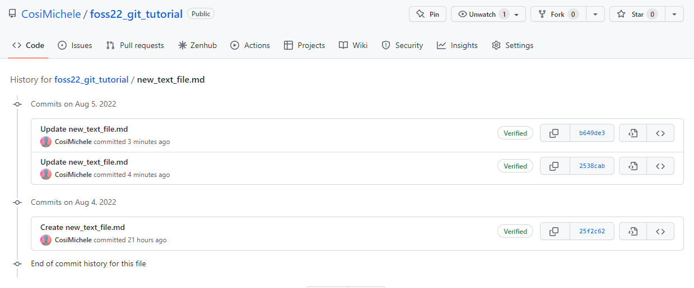
Adding Code locally¶
Adding code locally is a more complex than adding code through the web page, but it allows for better control on what files you commit.
- To add or modify code locally, you need to clone the repository on your computer. This requries that you have
gitinstalled on your machine; If you do not havegitinstalled, use the following commands:$ sudo apt-get install -y git-all - You can then clone the repository by clicking on the Code button, and copying the link shown
- 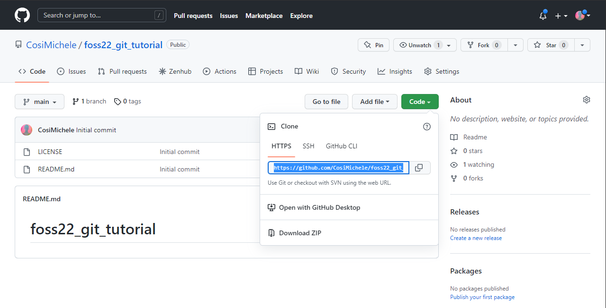
- On your machine, open a terminal window and type the following command:
$ git clone <repository address> # Replace <repository address> with the link you copied such as below $ git clone https://github.com/CosiMichele/foss22_git_tutorial.git Cloning into 'foss22_git_tutorial'... remote: Enumerating objects: 13, done. remote: Counting objects: 100% (13/13), done. remote: Compressing objects: 100% (12/12), done. remote: Total 13 (delta 5), reused 0 (delta 0), pack-reused 0 Unpacking objects: 100% (13/13), 14.47 KiB | 90.00 KiB/s, done. - Your code is now available to you on your machine, and you can add and modify files as needed.
You have modified your code locally, however you still have to push it to the repository. Prior to doing so there are a couple of steps you should do:
git status: it checkes on the status of the repository (files that have been modified, deleted, added - from either local or in the online repository)git pull: it checks and "pulls" changes from the online repository to your local repository. It ensures that you are always updated on the repository files and it can save a lot of time in case there are clashing commits from different users.
To do so:
- Add all fiels you have modified and want to commit:
$ git add . # Recall that "." (period) stands for all files in a folder - Commit the changes. When committing changes, you have to add a message (in quotation marks) with the
-mflag. This message is a concise and descriptive few words about what you did:$ git commit -m "locally added and modified files" [main 05f0ef6] locally added and modified files 2 files changed, 11 insertions(+), 1 deletion(-) create mode 100644 file_from_local.md - push your changes with push:
$ git push Enumerating objects: 6, done. Counting objects: 100% (6/6), done. Delta compression using up to 12 threads Compressing objects: 100% (4/4), done. Writing objects: 100% (4/4), 585 bytes | 32.00 KiB/s, done. Total 4 (delta 0), reused 0 (delta 0) To https://github.com/CosiMichele/foss22_git_tutorial.git b649de3..05f0ef6 main -> main
First time Pushing a commit?
GitHub is not going to blindly allow you to push changes to the repo, but it will be asking for you to log in.
- When asked for the user name:
- Add the username that you use to login into GitHub
- When it asks you for the password:
- DO NOT PUT YOUR PASSWORD, you will require a token instead
- Generate the token by
- On GitHub, click on your avatar (top right, and navigate to Settings)
- Scroll down to the bottom of the left hand menu, select Developer settings, and then Personal access tokens
- Now click on Generate new token (Enter password if requested)
- Choose the lenght of time for which this token is valid for, a note (for example, a reminder of what computer you're using this token on), and all the functionalities attached to it (as this is your private repository, you can select all the functionalities). Scroll to the bottom of the page and click Generate token
- Once created, the token is going to appear: copy the token and paste it in the password field in your terminal instead of your password.
You can now see the changes you made locally on the GitHub repository page.
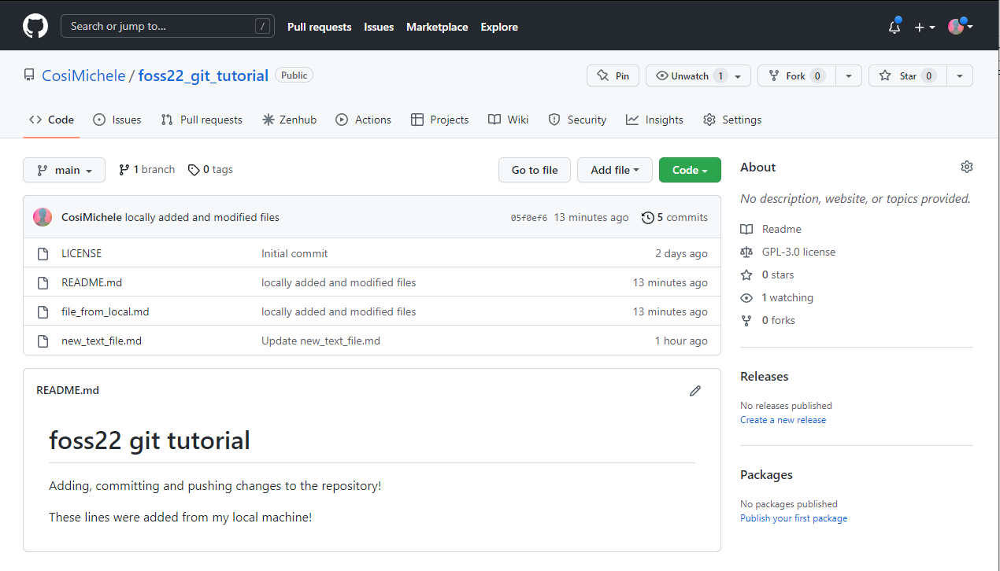
Branching¶
Branching allows you to develop your code whilst in a contained environment separate from your main environment. You can view the list and number of branches on the top of your repository.
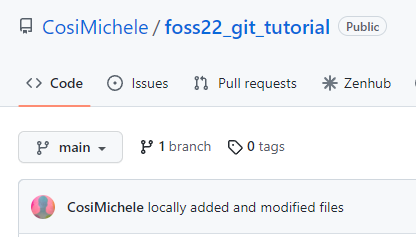
Why working on branches?
Branches allow you to add/remove/change exisiting code independently from your main branch. This code can include alphas, betas and different versions of your code. Branches can be used to develop documentation or include different functionalitiets focused on Operating Systems and/or clusters and job schedulers. If needed, you can add these codes to your main branch later using pull requests.
To create a new branch select the branch icon (listing the number of branches). This will open the branch page, which will list all of the branches in this repository.
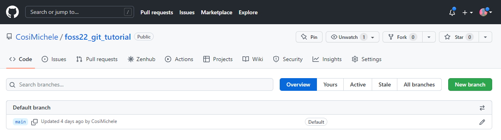
Select New Branch on the top right. Give the new branch a name of your choice, select the source of code (in this case the only source of code can be the main branch) and select Create branch.
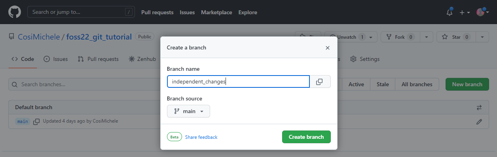
You can now see the updated list of all your branches.
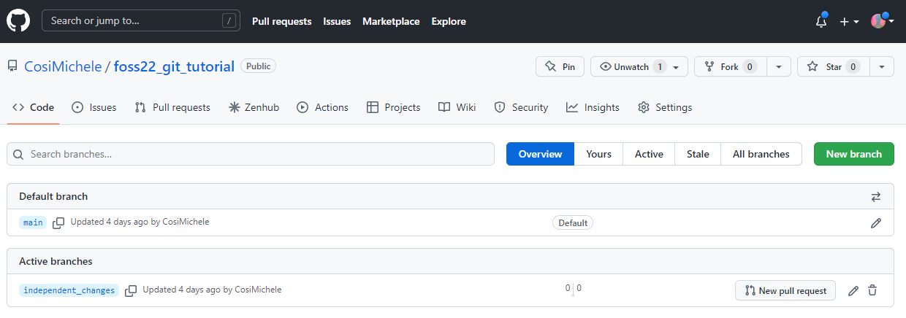
You can now use this new branch to create changes you are not yet ready to put in your main branch.
Want to delete a branch?
You can delete a branch from the branch web page by clicking on the trash can icon. Beware! All the changes you've made on that branch will be deleted!
Working on your machine?
Once you create a branch online, you can change to the desired branch on your machine with git switch <branch>. Don't forget to push your changes first!
Pull and Tab
- Don't forget to perform a
git pull! - Don't know your branches? Tab! When typing
git switch, press tab to see the options of all the branches you've created.
Pull Requests¶
Pull requests (PR) are proposed changes you can make on a repository. In this specific case, pull requests can be used to merge changes from a branch to another. Pull requests can also come from forks of your repository that another user or collaborator has made.
Assuming you have made changes in your branch (added a file, for example), a pop up will notify you that a branch has pushed some changes. In case you want to merge the branch and the main repository, you can review and merge by clicking the Compare & pull request button. However, you may want to wait until more changes are made.
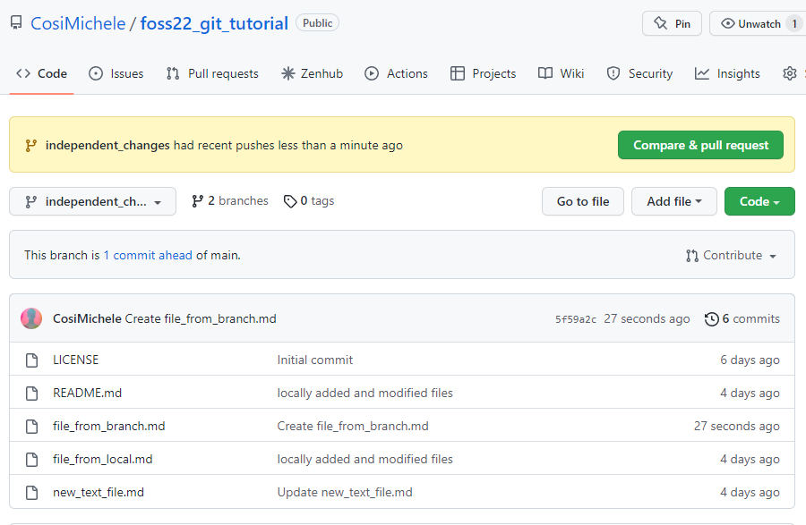
Once you are ready to merge the changes onto your main branch, click on the branch icon, and select New pull request from the branch you have just made changes. This will open a new page which will list all the changes made showing all files that have been modified, added, or deleted. When you're done reviewing your changes, click Create pull request.
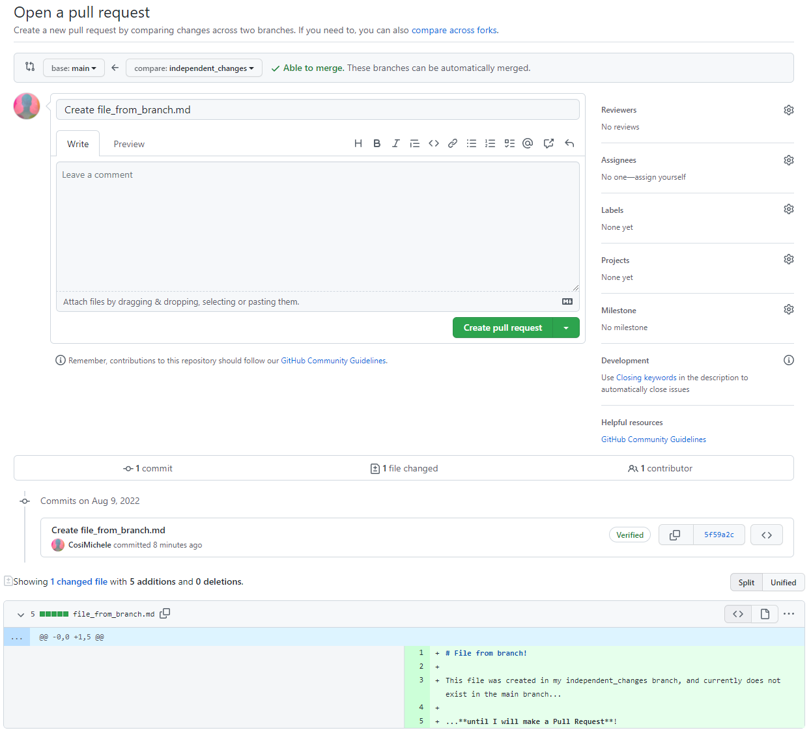
Pay attention to the information on the PR page!
The PR page will not only show you what changes you've made, but also where the changes are coming from (which branch), as well as reviewers, assigneers, labels and other information necessary when working on a big project. It will also show whether the changes are Able to be merged () or not ()!
Upon createing the pull request, a new page will open which will test whether the changes can be merged automatically. Changes that are not able to be merged usually clash with other changes other collaborators have made - this will require your revision prior to merging the PR! After revision, select Merge pull request and Confirm merge.
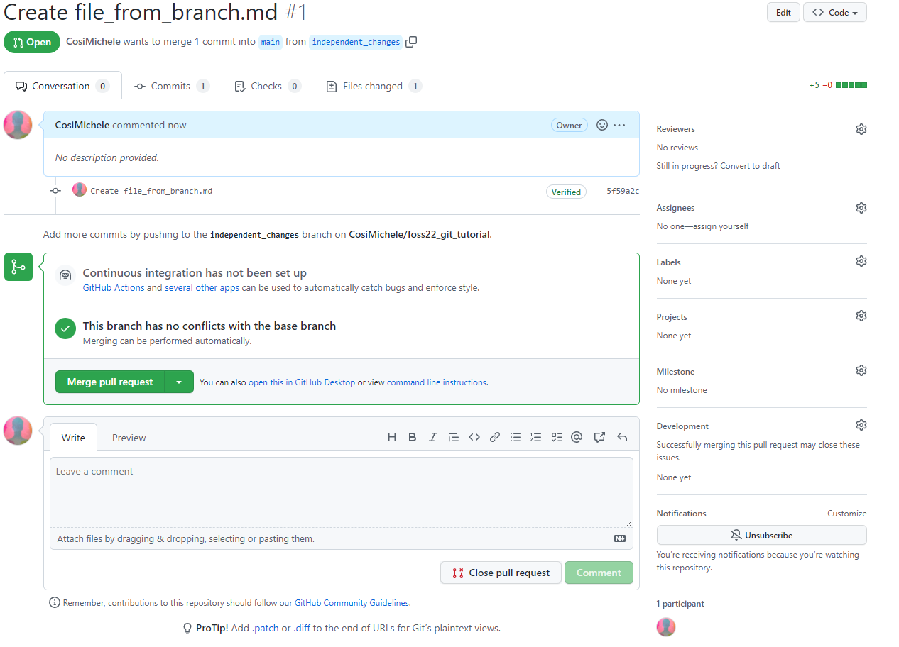
Your main repository should now have the files created in your other branch and merged through the PR!
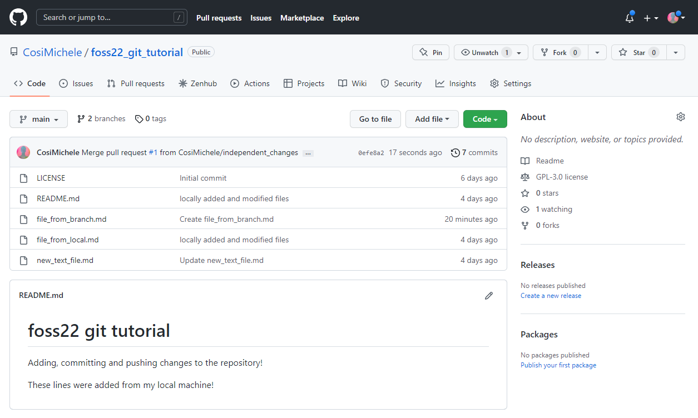
Tracking Issues¶
Another great feature that comes with GitHub, is the Issue tracker. Issues are requests, questions, bug reports that you and your collaborators may have. You can create a new issue in the issue tab
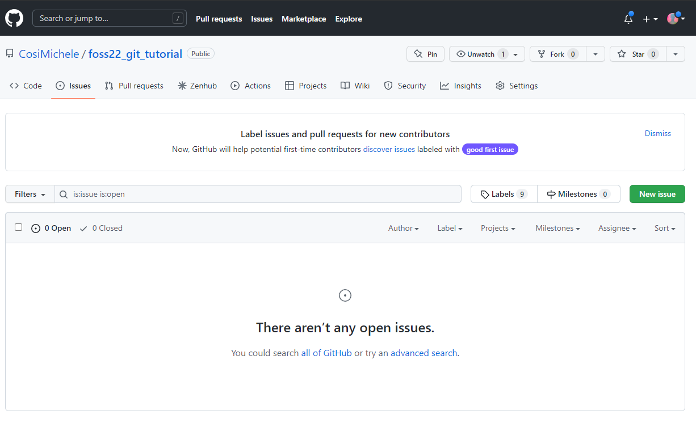
In case you want to open a new issue, click on the New issue button. You can type the issue at hand in the new page and click Submit new issue (it supports markdown!). Your Issues page should be updated with a list of all open issues.
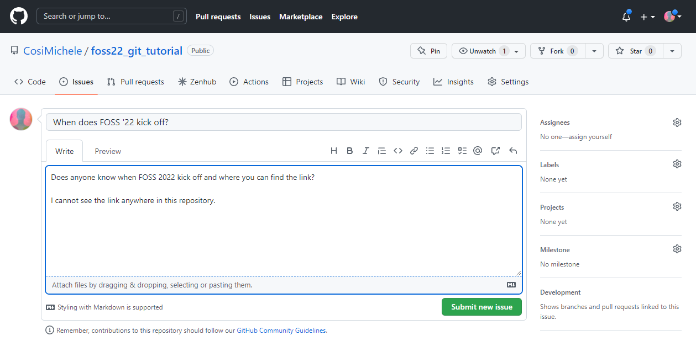 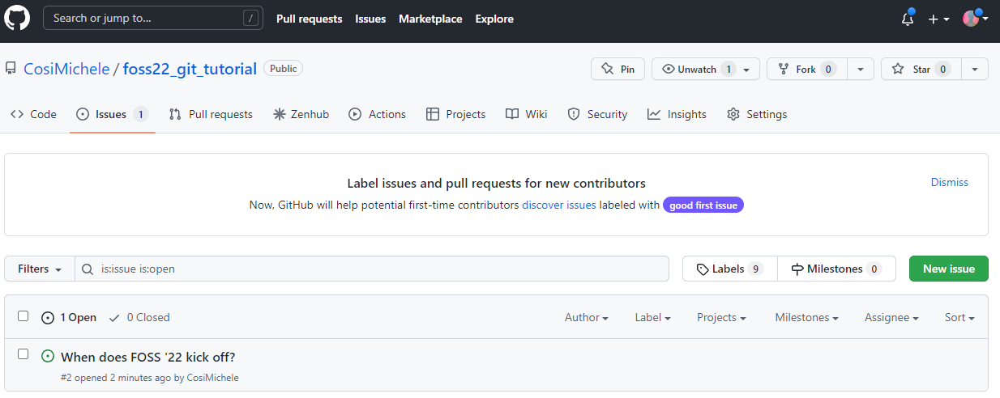
You can continue the conversation with a comment or Close the issue with a comment (and you can reopen later on as well if necessary!).
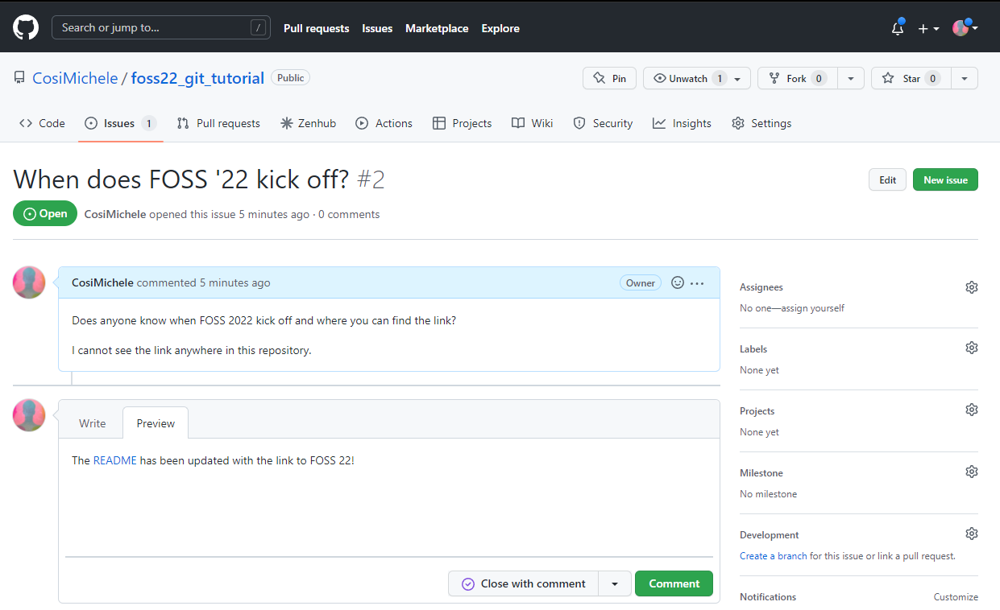